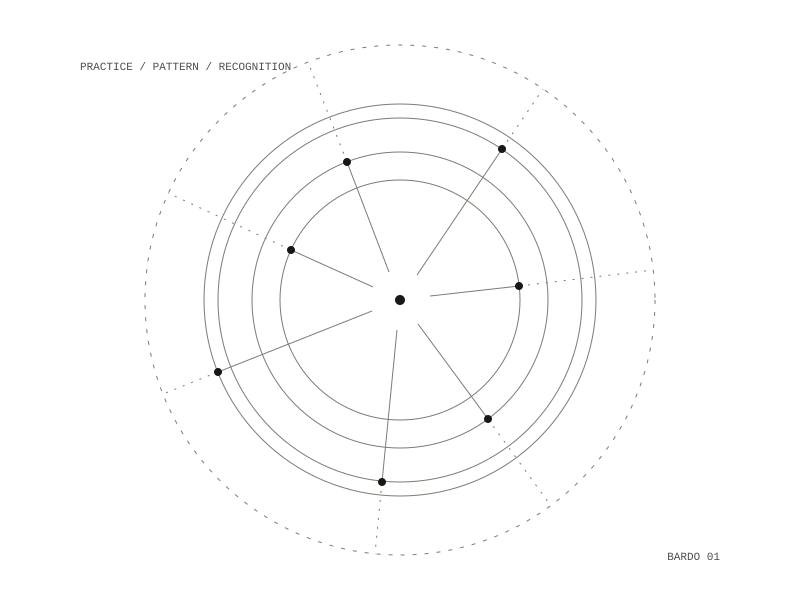

24 / project
Bardo
Combat that resolves through recognition
A Hollow-Knight-style 2D action platformer set in a modified Tibetan Book of the Dead, where your moveset is a limited loadout of yogic practices seated in chakras, and combat resolves through recognition rather than damage.

What exists
Milestone 1 only: one room, one deity, three practices, coloured rectangles. It exists to answer one question — is “survive the pattern while holding the correct practice” fun, or merely clever?
Bardo is a working title.
Engine
Godot 4.5
Headless smoke tests
Godot 4.5
Headless smoke tests
Repository — private
All work